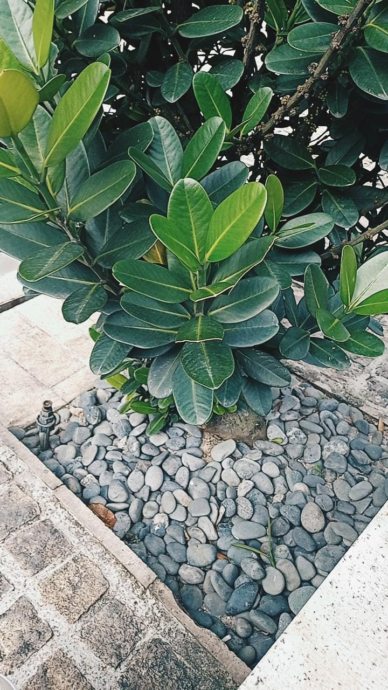

My Experience

Hi!!, I will tell you a little bit about my experience:).
I am the youngest child in this family of three siblings.
When I was in primary school I started and was interested in selling. During school hours I sold kechain and sugar
to my school friends. There was one day where I followed the Kokurikulum day sales program at school and made a lot
of profit.When I was at school, the spirit of business was still in me where I sold my sister's hand made choco jars.
It got many requests at school but in the fifth grade I stopped selling because I was busy with my studies and helping
my mother teach the children study the Quran.
After finishing school, I followed a lot of catering because I was bored of staying at home for too long so I followed catering to get rid of the boredom besides earning money I can also meet many new friends. In addition, I also do a lot of business online by being an agent selling other people's products. A little sweet experience that I want to share, which is last year when the pandemic hit, I was actively involved as a volunteer by following any government body that wanted to provide help such as face masks and necessities because at that time there were many people in need.
That all about my experience,thankyou.